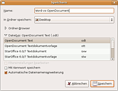
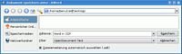
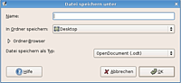

Word
Hinweis:
Die Anleitung gilt für Microsoft Office 97 bis 2003. Office Open XML Dateien von Microsoft Office 2007 oder neuer lassen sich ggf. nur eingeschränkt bearbeiten oder anschauen.
Es gibt verschiedene Textverarbeitungen unter Linux. Unter Ubuntu und Kubuntu wird ab 11.04 standardmäßig LibreOffice installiert. Xubuntu und Lubuntu setzen hingegen auf Abiword. Eine dritte Variante ist der Einsatz von Calligra/KOffice.
Wer ein Dokument in einem speziellen Format versenden will, sollte sich zuvor vergewissern, dass der Empfänger das entsprechende Dokumentenformat auch öffnen kann. Inzwischen gibt es aber auch das OpenDocument-Format, das die Interoperabilität zwischen verschiedenen Office-Programmen und somit auch zwischen verschiedenen Betriebssystemen steigern soll.
Generell sollten daher alle Daten, die nachträglich mitsamt Formatierungen bearbeitet werden müssen, als OpenDocument Text-Datei (.odt) abgespeichert und verteilt werden. Dies ist das Standarddateiformat von OpenOffice, LibreOffice und Calligra/KOffice. Auch mit Abiword ist ein Öffnen und Speichern in diesem Format möglich, allerdings eventuell mit Einschränkungen, da Abiword einen im Vergleich geringeren Funktionsumfang hat (z.B. bei Tabellen und Feldfunktionen). Zur endgültigen Weitergabe des fertigen Dokuments kann man es dann in das PDF-Format exportieren.
Allgemeines zu Microsoft Word-Dateien¶
Erhält man ein Textdokument aus einer externen Quelle, so ist die Wahrscheinlichkeit hoch, dass es ein Microsoft Word-Dokument ist, da dieses Format sehr verbreitet ist. Das Microsoft Word-Format (.doc) ist ein proprietäres Format und nicht öffentlich dokumentiert. Deshalb können die Export- und Import-Funktionen von allen Textverarbeitungsprogrammen unter Ubuntu fehlerhaft sein. Verschärft wurde diese Situation durch ein neues Standardformat (.docx), das mit Office 2007 eingeführt wurde.
Möchte man ein im .odt-Format erstelltes Dokument an einen Word-Benutzer zur Weiterbearbeitung weitergeben, so gibt es zwei Möglichkeiten:
Man konvertiert wie weiter unten beschrieben ins Microsoft Word-Format.
Der Empfänger benutzt ein Add-In für Microsoft Word - siehe OpenXML/ODF Translator Add-ins for Office

Des Weiteren gibt es noch die Möglichkeit, zur Anzeige (nur Lesen) eines .odt Dokuments unter Windows einen OpenDocument Viewer  zu nutzen.
zu nutzen.
Dokumente öffnen¶
Hinweis:
Ein Dokument kann trotz korrektem Import / Öffnen nicht richtig dargestellt werden, wenn die im Dokument verwendeten Schriftarten auf dem eigenen Rechner nicht installiert sind.
Achtung!
Makros von Microsoft Word funktionieren unter sämtlichen verfügbaren Büroanwendungen unter Ubuntu nicht. Sie können aus diesem Grund auch nicht importiert werden. Außerdem verwenden die verschiedenen Programme inkl. Microsoft Word verschiedene Tabulatorsprungweiten, so dass es auch hier zu Fehldarstellungen kommt.
OpenOffice.org Writer¶
Früher war der Import von Word-Dateien in OpenOffice.org wirklich ein Problem. Heute sind die Import- und Export-Filter von OpenOffice.org dermaßen gut ausgereift, dass sogar diverse Sicherheitslücken , die nur in Microsoft Word vorhanden waren, mittlerweile auch unter OpenOffice.org vorhanden sind. Das Risiko ist allerdings bei weitem nicht so groß wie unter Windows mit Microsoft Office, dennoch sollte man es nicht außer Acht lassen (siehe Ikhaya-Beitrag zu diesem Thema).
Experten-Info:
Eine Demonstration, wie eine solche Sicherheitslücke ausgenutzt werden kann, zeigt das folgende Beispiel. Wie hier dokumentiert. Dies ist ein Word-Dokument, welches keinen Schaden anrichtet, aber OpenOffice.org Writer zum Absturz bringt.
KWord und Abiword¶
Der Import und Export von Word-Dokumenten ist längst nicht so ausgereift wie der von LibreOffice bzw. OpenOffice.org.
Zum Öffnen kann man Word-Dokumente ganz einfach per Rechtsklick mit "Öffnen mit" und dort "KWord" bzw. "Abiword" öffnen. Da unter Xubuntu und Lubuntu Abiword die Standardtextverarbeitung ist, reicht hier ein Doppelklick auf eine Word-Datei.
SoftMaker FreeOffice¶
Es werden auch die Formate DOCX, XLSX und PPTX erkannt und per Rechtsklick mit "Öffnen mit" geöffnet. Will man in diesen Formaten auch abspeichern, muss allerdings die Vollversion gekauft werden.
Konvertieren nach OpenDocument¶
Sollten alle hier aufgeführten Methoden versagen, so kann man evtl. einen Online Dokumenten-Transformer von Zamzar verwenden, um die Datei in das gewünschte Format zu konvertieren. Die Ergebnisse sind erstaunlich gut, auch wenn der Konverter manchmal ebenfalls seine Schwierigkeiten hat.

OpenOffice.org Writer¶
Nach dem Öffnen einer Word-Datei kann diese als OpenDocument Text abgespeichert werden. Unter "Datei -> Speichern unter -> Dateityp" wählt man das OpenDocument-Format und konvertiert damit das Word-Dokument zu OpenDocument Text.
Sollte man mehrere Word-Dateien mit einem Arbeitsschritt in das OpenDocument-Format konvertieren wollen, so bietet sich der OpenOffice.org-Dokumentenkonverter an (siehe auch unoconv).
KWord (KOffice) / Words (Calligra)¶
 Nach dem Öffnen eines Word-Dokumentes kann man dieses ebenfalls durch Klicken auf "Datei -> Speichern unter" in das OpenDocument-Dateiformat konvertieren. Da OpenDocument das Standardformat von Calligra / KOffice ist, ist dieses bereits voreingestellt. Bei Grafiken von Word-Dateien kann es zu Formatierungsproblemen beim Speichern im OpenDocument-Format kommen. Ggf. kann mit LibreOffice bzw. OpenOffice.org ein besseres Ergebnis erzielt werden.
Abiword¶
 Die OpenDocument-Konverter unter Abiword entsprechen einem sehr frühem Entwicklungsstand. Es sollte derzeit grundsätzlich davon abgesehen werden, Word-Dokumente mit Hilfe von Abiword in das OpenDocument-Format zu konvertieren, wenn man das wesentlich leistungsfähigere LibreOffice bzw. OpenOffice.org zur Verfügung hat. Sämtliche Formatierungen werden in allen anderen OpenDocument-Anwendungen erheblich anders aussehen. Der Inhalt an sich geht natürlich nicht verloren.
Sollte man dennoch Word-Dateien als OpenDocument konvertieren wollen, so findet man dies im Menü "Datei -> Speichern unter". In dem sich öffnenden Fenster muss man den Dateityp auf OpenDocument (.odt) setzen und speichern.
Hinweis:
Auf Grund der Tatsache, dass Abiword das OpenDocument nur mangelhaft unterstützt, wird an dieser Stelle empfohlen, das programmeigene Format .abw zu verwenden, zumindest, wenn man es nur für sich selbst benötigt. Dieses findet man ebenfalls im Menü unter "Datei -> Speichern unter". Dieses Format ist die Voreinstellung.
Speichern im Microsoft Word-Format¶
OpenOffice.org Writer¶
OpenOffice.org kann die Dokumente im Word-Format speichern. Unter "Datei -> Speichern unter -> Dateityp" kann man das Word-Format auswählen.
KWord (KOffice) / Words (Calligra)¶
Ein direktes Speichern im Microsoft Word-Format ist nicht möglich.
Abiword¶
Das Speichern von Word-Dokumenten funktioniert ebenfalls mit Abiword. Dazu einfach "Datei -> Speichern unter" wählen. In dem sich öffnenden Menü lässt sich dann ganz einfach das Microsoft Word-Format auswählen.
Alternative Formate¶
Textdatei¶
Muss es wirklich ein formatiertes Dokument sein, oder geht es nur um den Inhalt? In dem Fall würde eine einfache Textdatei genügen, die nebenbei auch noch winzig klein ist.
OpenOffice.org, KWord und Abiword bieten beim Speichern die Möglichkeit, das einfache Textformat auszuwählen.
RTF-Format¶
Wenn ein Dokument relativ problemlos weiterverarbeitet werden soll oder einige Textformatierungen wie verschiedene Schriftattribute enthält (z.B. fett oder kursiv), bietet sich das Rich Text Format (RTF) an. Dieses Format ist sehr alt, bietet jedoch den Vorteil, dass man dieses auch in einem normalen Editor bearbeiten kann. Im Grunde ist das RTF-Format eine normale Textdatei. Soll also die Formatierung unter Microsoft Word korrekt aussehen, dann hat dieses Format wirklich Vorteile.
Beim Speichern eines Dokuments in der Textverarbeitung kann dieses Format ausgewählt werden.
Hinweis:
Das RTF-Format eignet sich allerdings nur, wenn das Dokument allein aus (formatiertem) Text besteht. Das Einbetten von Bildern, komplexe Tabellen, etc. sind mit diesem Format nicht möglich.
PDF-Format¶
Wenn das Dokument beim Empfänger genau so aussehen soll wie beim Ersteller, und zudem nicht weiter bearbeitet werden soll oder muss, bietet sich das PDF-Format an. Jeder kann es mit einem kostenlosen PDF-Reader lesen. Die Anwendungen Krita und Karbon aus der Calligra Suite bzw. KOffice verfügen über einen Import-Filter und können einfache PDF-Dateien nachträglich bearbeiten.
 Übersichtsseite
Übersichtsseite - Erstellt mit Inyoka
-
 2004 – 2017 ubuntuusers.de • Einige Rechte vorbehalten
2004 – 2017 ubuntuusers.de • Einige Rechte vorbehalten
Lizenz • Kontakt • Datenschutz • Impressum • Serverstatus -
Serverhousing gespendet von